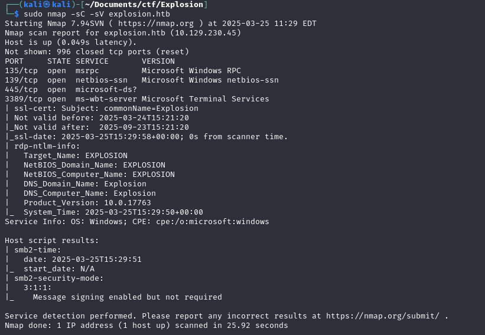

First of all, I add explosion.htb into my /etc/hosts
It did give me a lot of information, but it is hard to figure out where to move. So I will check if there is anything specific that is running on the ports.
sudo nmap -sC -sV explosion.htb

sudo nmap -sC -sV -p47001,49664-49671 explosion.htb
Now with all this information, what can I do? Something that stands out is that port 3389 is open which is RDP.
Then I tried to use xfreerdp to connect to it. Also we know that it is a windows machine, so I will try to connect as a Administrator.
xfreerdp /v:explosion.htb /u:Administrator
After that, it opens this window, and we can get the flag.